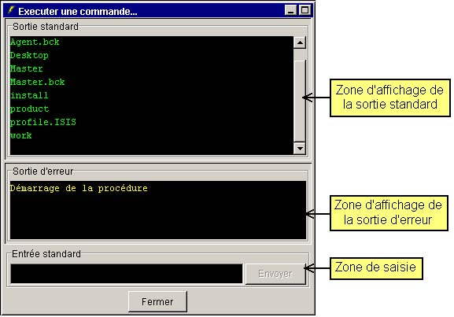
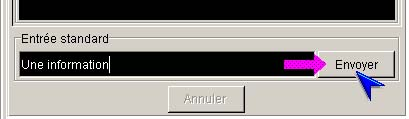
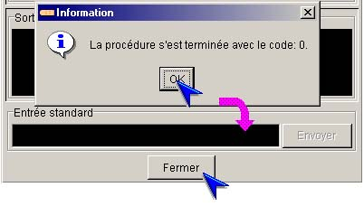

|
I-SIS Explorer |
||
|
Guide d'utilisation |
||
L'exécution d'une méthode d'exploitation peut correspondre à l'exécution d'une procédure sur la plate-forme du I-SIS Portail ou la plate-forme du I-SIS Agent, cette procédure pouvant être un script d'exploitation ou un binaire.
Dans ce cas, une sous-fenêtre est affichée dans la zone droite de la fenêtre principale de I-SIS Explorer. Cette sous-fenêtre est divisée en trois zones principales:
Une zone d'affichage de la sortie standard de la procédure,
Une zone d'affichage de la sortie d'erreur de la procédure,
Une zone de saisie permettant de transmettre des données sur l'entrée standard de la procédure.

La sous-fenêtre d'exécution de procédure apparaît dès le début de l'exécution de la procédure. Les zones d'affichage des sorties de la procédure (standard et d'erreur) sont mises à jour en temps réel en fonction des données émises par la procédure.
Tant que la procédure est en cours d'exécution, il est possible de transmettre à tout moment des données sur celles-ci, via la zone de saisie et le bouton "Envoyer" situés dans le cadre "Entrée standard".
Saisissez des informations dans la zone de saisie,
Tapez la touche "Entrée" ou cliquez le bouton "Envoyer",
Les informations sont transmises à la procédure, et la zone de saisie est ré-initialisée.

Lorsque la procédure a terminé son exécution, une fenêtre est affichée, vous prévenant de la fin de l'exécution, et vous indiquant le code retour de la procédure.
Validez le message en cliquant le bouton "Ok",
Le bouton situé en bas de la sous-fenêtre d'exécution devient le bouton "Fermer" et actif,
Cliquez ce bouton pour fermer la sous-fenêtre.

|
i |
Information : Tout ou partie des informations contenues dans les zones de sorties standard et d'erreur de la procédure peuvent être copiées, via le menu "Edition". Tout ou partie des informations peuvent être copiées, coupées ou collées depuis ou vers la zone de saisie de la fenêtre d'exécution, via le menu "Edition". |
Copyright © 2003 BV Associates. Tous droits réservés.